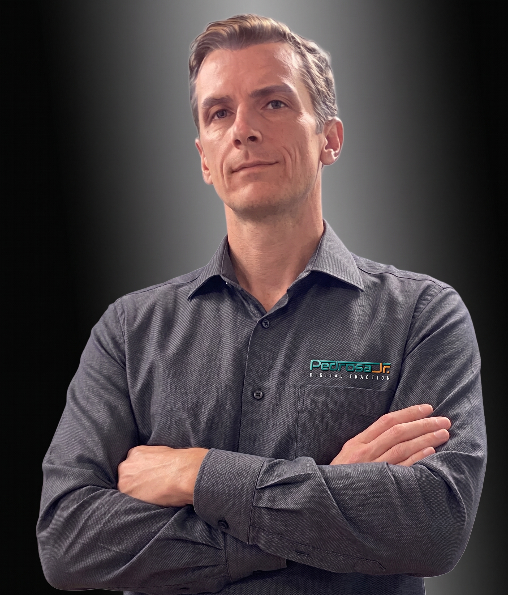

Somos sérios e técnicos, mas acima de tudo gostamos muito do que fazemos, porisso estamos sempre em constante aprendizado. Cada novo cliente é tratado como se fosse o primeiro.

Com mais de 30 anos de experiência atuando na linha de frente de gigantes multinacionais, desenvolvi minha expertise em inteligência de negócios, negociações complexas e estruturação de lucratividade.
A transição para o ecossistema online foi um movimento estratégico e natural. Apliquei o rigor da engenharia comercial para me especializar em performance digital e processos online. Hoje, transformo o ecossistema das empresas estruturando gestão de tráfego (Ads), posicionamento imponente em redes sociais e implantação inteligente de CRM.
Somos uma empresa focada exclusivamente em tracionar negócios e marcas no ambiente digital. Nosso ecossistema de soluções vai muito além da "estética". Nós geramos alavancagem de faturamento através do aprimoramento contínuo de anúncios (Ads), engajamento real em redes sociais, campanhas online agressivas e o desenvolvimento eficaz da sua marca (Branding).
Nossas decisões não são baseadas em intuição. Utilizamos relatórios de KPI fundamentados em dados 100% confiáveis.
No entanto, a tecnologia não opera no vácuo. Para que o projeto seja um sucesso absoluto, a colaboração estreita dos clientes e envolvidos é inegociável. A tração acontece na união entre o nosso método e a sua operação.
— Nossa filosofia de trabalho é baseada na realidade corporativa. Entendemos as dores operacionais da sua empresa e entramos como parceiros táticos para vencer a guerra do mercado.